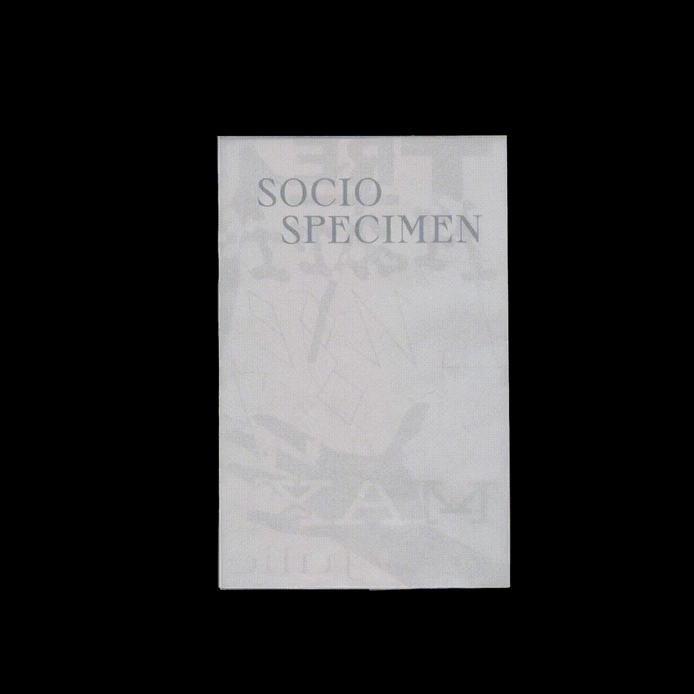
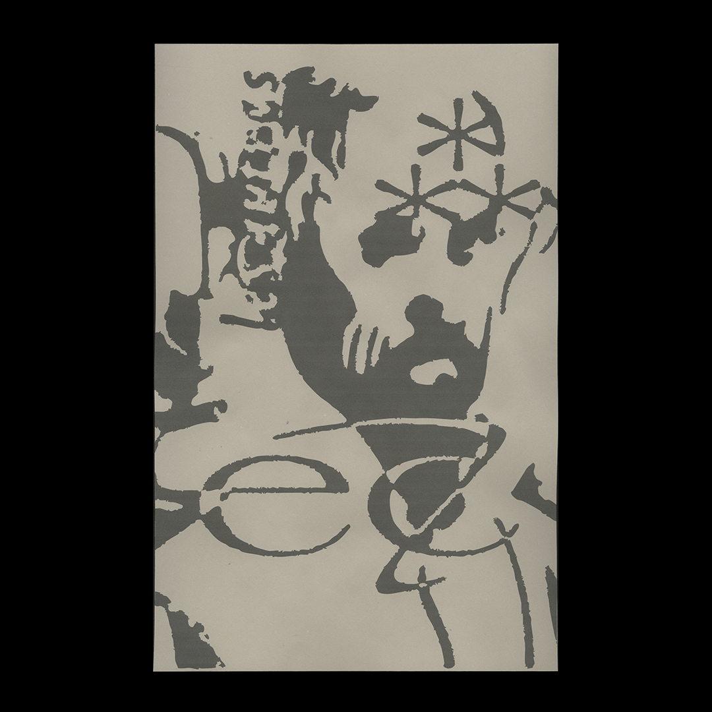
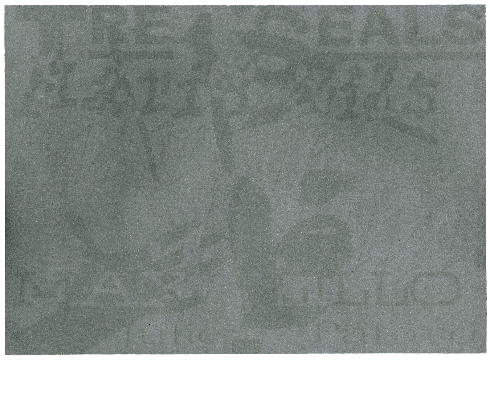

Completed in the context of DGX1031: Typography & Compositions, under the supervision of Raphaël Daudelin at UQAM's School of Design, Fall 2024.
Socio Specimen is a typographic specimen that examines how type design can become a vehicle for social, political, and cultural advocacy. Rather than presenting typefaces solely through their formal qualities, the publication situates them within the movements and communities from which they emerged, demonstrating how typography can actively participate in conversations surrounding identity, representation, and inclusion.

The publication highlights the work of underrepresented type designers and foundries whose practices challenge conventional approaches to graphic design. Featured throughout the book are typefaces by Vocal Type, inclusive letterforms developed by Bye Bye Binary and Velvetyne Type Foundry, as well as a collection of dingbats created by the Women's Design Research Unit. Together, these projects reveal typography not simply as a tool for communication, but as a medium capable of expressing collective memory, activism, and social change.

Materiality played an important role in the reading experience. The 160-page publication was laser printed on bond paper, bound within a Fabriano cardstock cover, and protected by a heavyweight vellum jacket. The layered construction reflects the publication's archival character while allowing the specimen itself to remain the primary focus.

Fonts
BBB Sprat
VTC Marsha
BBB PicNic
VTC Bayard
BBB Crozet.te
VTC Eva
BBB Escabeau
VTC Spike
BBB Roberte
Pussy Galore